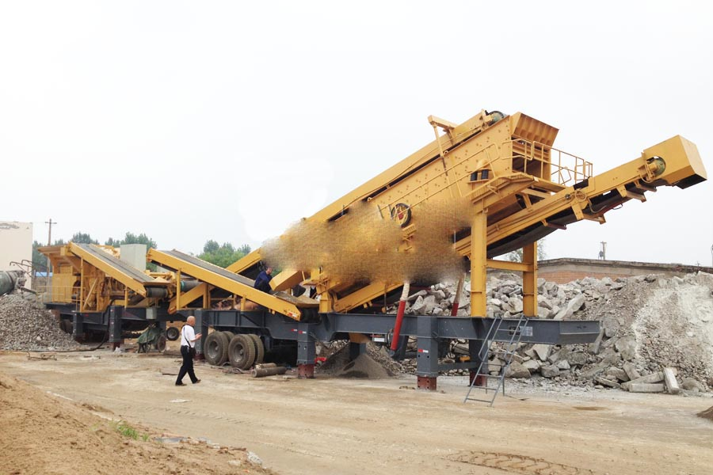

- Home >
- application case >
- asphalt mobile crushing plant

Construction waste crushing production line

Mobile construction waste crushing station for urban construction waste crushing.
asphalt mobile crushing plant
Pakistan mobile crushing and screening equipment manufacturers offer CAG how much money mobile crushing plant
Keywords: mobile crusher, Pakistan, CAG
Description: lots of stone, gravel pits customers would very much like to know how much CAG mine machine manufacturing mobile crushing plant. CAG miner is the abbreviation of CAG Zhengzhou mining machinery limited, located in Zhengzhou city, Henan province xingyang, is specialized in the development, production and sales of mobile crushing and screening equipment for large-scale mining machinery manufacturers, CAG feeder every day can bring you the most accurate quotation.

CAG mineral characteristics of mobile crushing and screening equipment
Mobile crushing plant of Shanghai CAG mine is going all out to develop novel series of rocks and construction waste crushing equipment, greatly expanded the concept of coarse and fine crushing operation areas, elimination of breaking ground, environment, complexity based configuration for breaking barriers to work, according to the different broken free combination of crushing process, truly offer our customers simple, efficient and low cost operation of hardware facilities. It suitable for crushing of materials: construction waste, River gravel, quartzite, granite, basalt, diabase, iron ore
Shanghai CAG mobile crushing and screening machine equipment are introduced in detail
Shanghai CAG Mining Machinery Co., Ltd. launched mobile crushing and screening equipment, with mature technology and rich experience in the design service in Sinosteel Corporation, CNPC, Brazil’s CVRD, Mongolia Erdenes Tavan Tolgoi, and customers in the global construction and participate in major projects, play a positive effect. Mobile crushing and screening equipment configuration of vehicle power generating units, support two drive mode, customers can according to the construction site selection and is connected with a power driven or independent drive operation; feeder with pre screening, manually turn plate device can easily switch pre screening material go to that side of the belt conveyor, and can output two kinds of finished product material. Also according to the customer site greatly super strength feed work habits, for feed bin were characteristic of reinforcement, and colleagues compared to the same products, anti deformation wear resistance has been further strengthened. The patent cushion bed design is effective to prevent the impact of the material on the belt, which greatly prolongs the service life of the belt.
In the electrical control system, the use of high-end configuration: SIEMENS motor, LCD touch screen, PLC control system control cabinet, with false operation tips and protection, electrical control operation, failure and safety tips and other functions. In case of emergency, the emergency stop can be realized through the emergency stop switch. In addition, in the details of the design of the station, more humane, the operator can observe the working state of the equipment.
Following CAG mine mobile crushing and screening equipment success stories
(1) Jilin siping introduction of Shanghai CAG mineral building waste of mobile crushing and screening equipment to construction debris recycling
(2) the introduction in Luoyang, Henan Shanghai CAG miner broken basalt cone-type mobile crushing and screening equipment
(3) CAG mine producing 200 tons of mobile crushing and screening equipment when power sand stone in Lanzhou, Gansu province
Leave Me A Message, Now
If you have any questions regarding equipment prices, production line configuration or other problems, you can send a message to us, we will contact you soon.